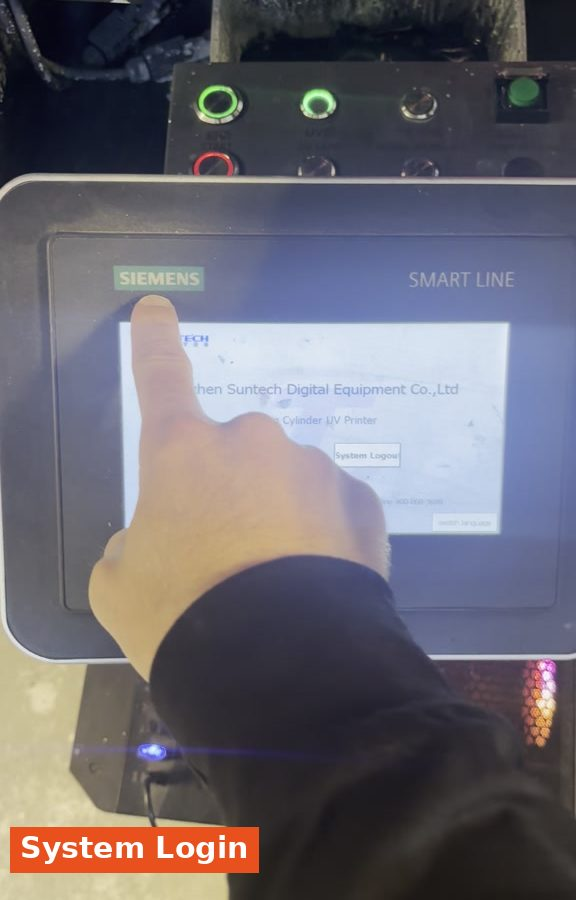
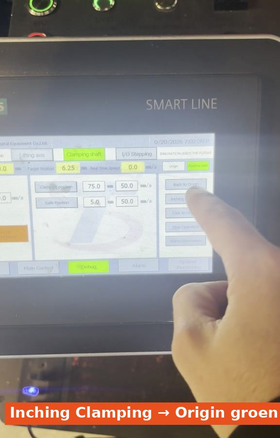
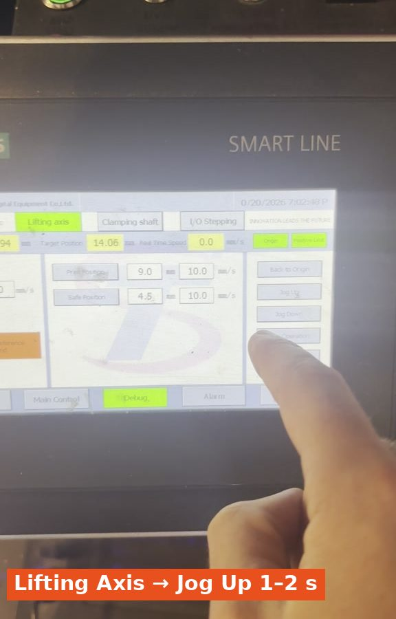
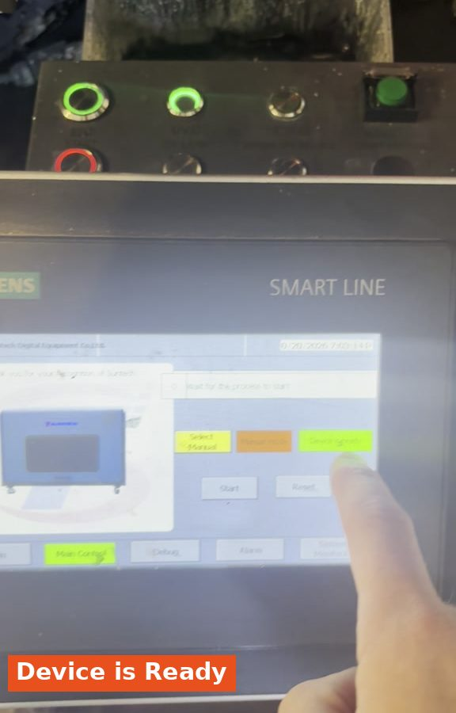
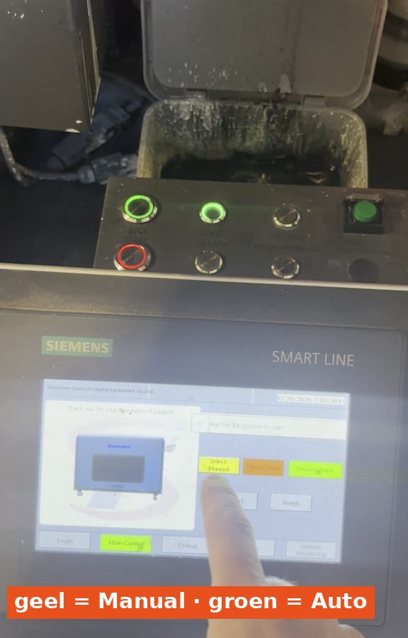
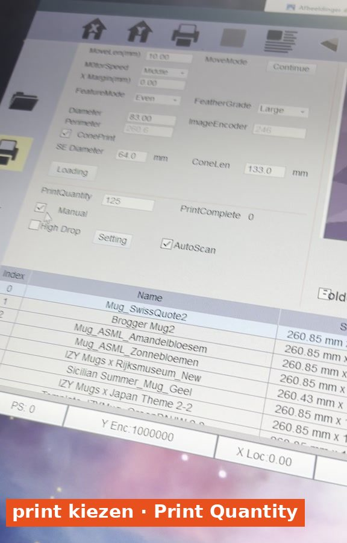

Zo maak je de mokprinter (Mug 1) gereed en print je een order. Doe eerst deel 1: printer opstarten. Let op: het gereedmaken op het Siemens-scherm is anders dan bij de flessenprinters.
1
Clamping shaft op nul zetten
Tik op het Siemens-scherm op System Login.
Tik op Debug en ga naar Clamping shaft.
Druk op Inching Clamping tot Origin groen wordt.

System Login.Debug → Clamping shaft.

Inching Clamping tot Origin groen is.
2
Lifting Axis omhoog
Ga naar Lifting Axis.
Druk heel even op Jog Up, echt maar 1–2 seconden.
Controleer dat Origin en Positive limit groen zijn.

Lifting Axis → Jog Up 1–2 sec.
3
Machine resetten
Ga naar Main Control.
Houd Reset5 seconden ingedrukt.
Je krijgt een oranje balk en ziet de machine bewegen.
Het rode knopje springt naar groen: Device is Ready. Dan is hij klaar.
Main Control → Reset 5 sec.

Groen: Device is Ready.
4
Posities opslaan
Ga weer naar Debug → Clamping shaft en druk op Save Position.
Ga naar Lifting Axis en druk ook op Save Position.
De machine staat nu op de juiste plek om er een mok in te doen.
Save Position.
5
Kies: handmatig of automatisch
Handmatig (Manual)
Laat de knop op het Siemens-scherm op geel staan. Vink in de printsoftware Manual aan.
Automatisch
Druk op het gele knopje zodat alles groen wordt. Vink in de printsoftware Manual uit.

Geel = Manual, groen = automatisch.
6
Printbestand instellen
Kies in de printsoftware het juiste printbestand.
Klik op Modify, zet C and W aan en klik op Apply.
Vul bij Print Quantity het aantal te printen mokken in.

Print kiezen, Print Quantity invullen.Modify → C and W → Apply.
7
Printen starten
Klik op de Print-knop en daarna op Yes.
Print Confirm → Yes.
8
Mok erin en START
Bij automatisch printen:
Leg de mok in de printer met je vinger op de schroefdraad.
Bepaal zelf de juiste positie, zodat de dop aan de voorkant komt.
Druk op de groene START-knop op de machine. De mok wordt geprint.